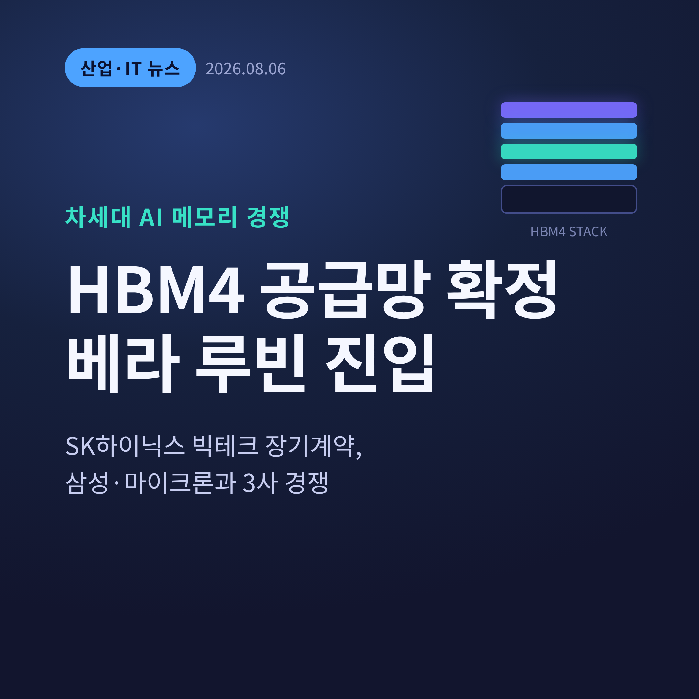
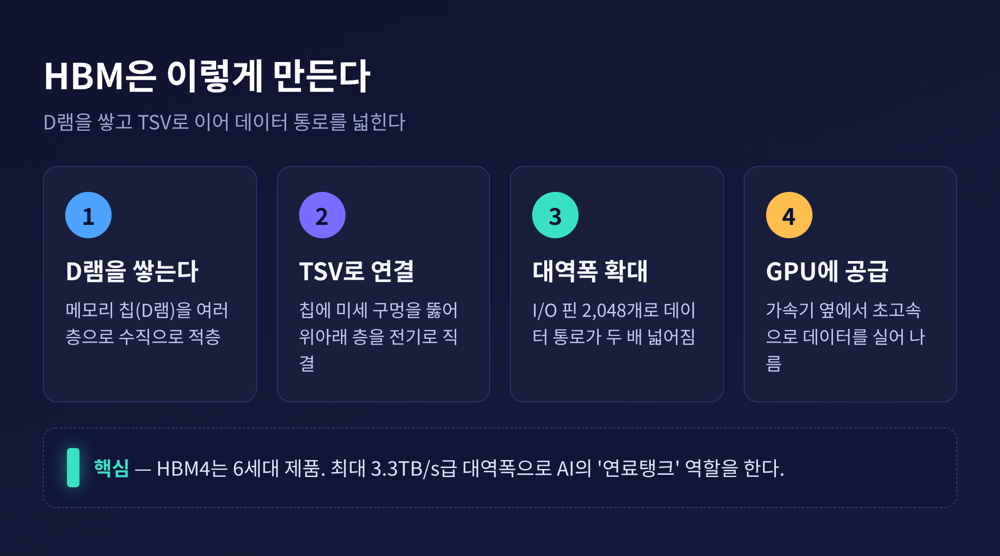
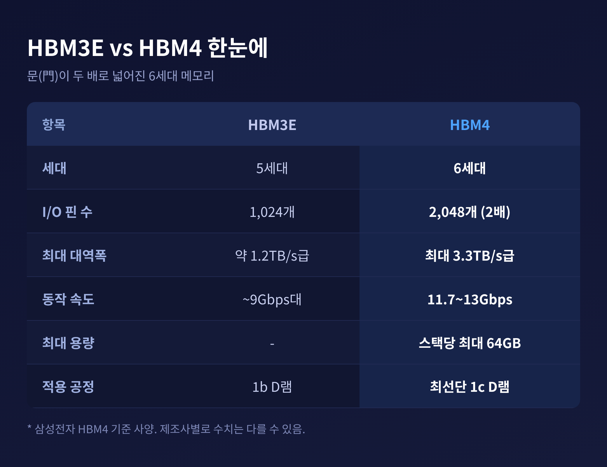
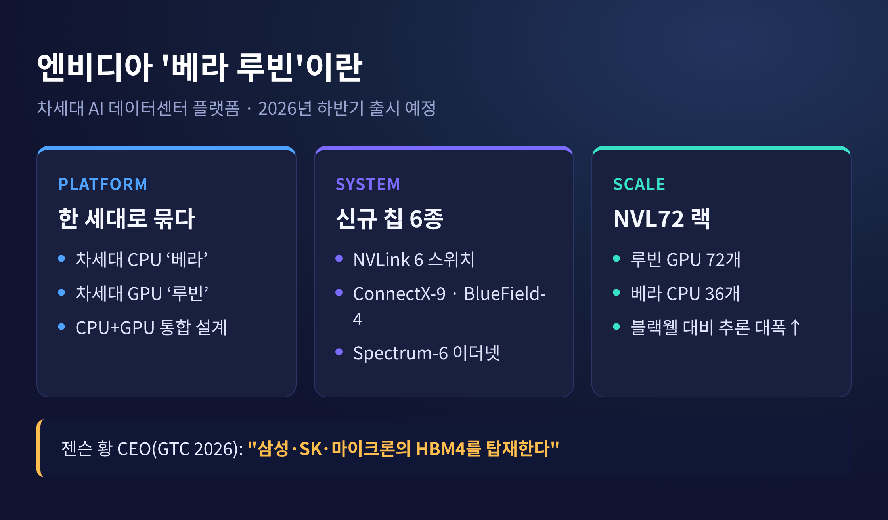
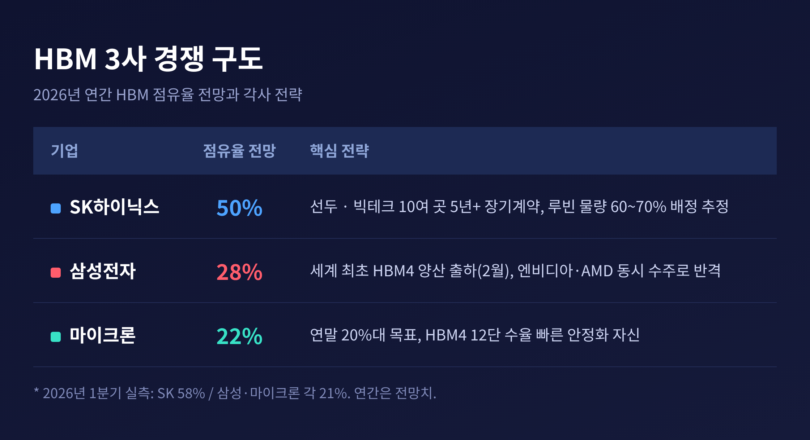
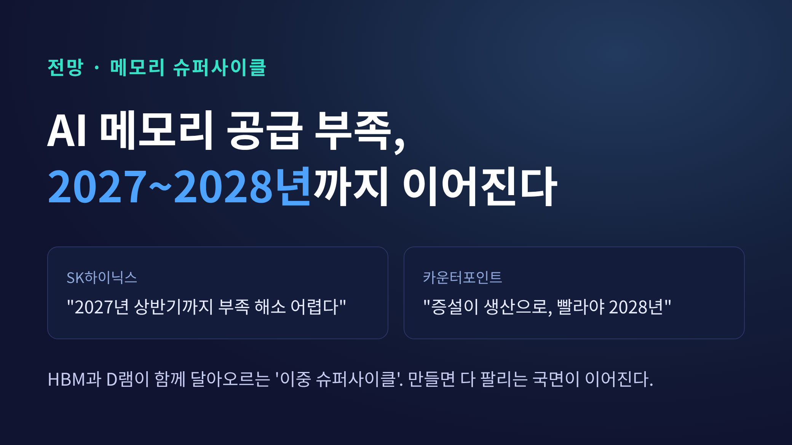

HBM4 공급망 확정, SK하이닉스 빅테크 장기계약과 엔비디아 베라 루빈 진입
이번 글에서는 이번 주 반도체 업계를 흔든 소식 하나를 정리해 보겠습니다. SK하이닉스가 6세대 고대역폭메모리인 HBM4의 공급망을 확정하고, 글로벌 빅테크 여러 곳과 장기 공급계약을 맺었습니다. 동시에 엔비디아의 차세대 AI 가속기 '베라 루빈'에 들어갈 메모리 자리를 두고 최종 품질 검증이 진행 중입니다. 무슨 일인지, 왜 중요한지, 앞으로 어떻게 될지 차근차근 살펴봅니다.

무슨 일이 있었나
핵심부터 말씀드리겠습니다. SK하이닉스가 HBM4 생산라인 재편을 마무리하고, 핵심 고객을 포함한 10여 곳과 장기공급계약을 마쳤습니다. 업계에서는 약 11개 고객으로 봅니다.
눈여겨볼 대목은 계약의 '기간'입니다. 예전엔 메모리를 1년 단위로 사고팔았습니다. 지금은 최장 5년 이상 물량과 가격을 미리 묶는 장기계약으로 바뀌었습니다.
여기에 엔비디아와의 대형 협력이 더해집니다. 업계는 그 규모를 5,000억 달러 이상으로 추정합니다. 메모리를 넘겨주는 회사가 아니라, AI 산업의 한 축을 함께 지는 파트너가 된 셈입니다.
같은 시각, 엔비디아의 차세대 AI 가속기 '베라 루빈'에 들어갈 HBM4 공급망은 최종 검증 국면에 들어섰습니다. SK하이닉스는 이미 엔비디아와 AMD의 품질 검증을 통과했고, 6월 말에는 12단 HBM4 양산 물량을 엔비디아에 출하했습니다. 9월 증산을 앞두고 물량을 늘리는 중입니다. 블룸버그는 SK하이닉스가 루빈용 물량의 60~70%가량을 배정받은 것으로 업계가 추정한다고 전했습니다.

HBM4가 대체 무엇이길래
용어부터 풀어보겠습니다. HBM은 고대역폭메모리(High Bandwidth Memory)의 줄임말입니다. 쉽게 말하면, 데이터를 담는 D램을 여러 층으로 높이 쌓아 올린 특수 메모리입니다.
쌓기만 해서는 소용이 없습니다. 층과 층을 잇는 통로가 필요합니다. 그 통로가 바로 TSV, 실리콘관통전극입니다. 칩에 미세한 구멍을 수천 개 뚫어 위아래를 전기로 곧장 연결하는 기술입니다. 그래서 데이터가 지나는 길이 훨씬 넓어집니다.
HBM4는 이 메모리의 6세대 제품입니다. 가장 큰 변화는 데이터가 드나드는 문의 개수입니다. 입출력 핀이 1,024개에서 2,048개로 두 배 늘었습니다. 문이 넓어졌으니 한 번에 오가는 데이터의 양도 늘어납니다.
숫자로 보면 이렇습니다. 이론상 대역폭은 초당 2조 바이트, 약 2TB/s 수준입니다. 삼성전자 제품은 이전 세대인 HBM3E보다 약 2.7배 빠른 최대 3.3TB/s급을 내세웁니다. 동작 속도도 표준(8Gbps)을 46%가량 웃도는 11.7~13Gbps에 이릅니다. 한 스택에 최대 16개 층을 쌓아 64GB까지 담습니다. 어려운 숫자지만, 요지는 하나입니다. AI가 요구하는 데이터를 더 빠르게, 더 많이 실어 나른다는 것입니다.

왜 이 소식이 중요한가
HBM은 AI 가속기의 연료탱크에 비유됩니다. 아무리 성능 좋은 GPU라도, 곁에서 데이터를 빠르게 대주지 못하면 제 속도를 내지 못합니다. 그 연료탱크를 누가, 얼마나, 어떤 조건에 공급하느냐가 AI 성능의 병목을 좌우합니다.
계약 방식의 변화도 그냥 넘길 일이 아닙니다. 메모리 산업은 호황과 불황이 파도처럼 오가는 것으로 악명 높았습니다. 값이 오르면 다 같이 늘리고, 그러다 값이 폭락하는 일이 되풀이됐습니다.
장기계약은 그 파도를 잔잔하게 만듭니다. 몇 년 치 물량과 가격을 미리 정해 두면, 수익을 오래 붙들어 둘 수 있습니다. '을'로 불리던 메모리 기업이 '핵심 파트너'로 올라섰다는 신호이기도 합니다.

베라 루빈, 그리고 삼성의 반격
베라 루빈은 엔비디아의 차세대 데이터센터 플랫폼입니다. 천문학자의 이름을 땄습니다. 차세대 CPU '베라'와 차세대 GPU '루빈'을 한 세대로 묶었습니다.
여기에는 GPU와 CPU만 있는 게 아닙니다. 네트워크 스위치와 통신 칩 등 신규 칩 6종이 하나로 짜입니다. 대표 구성인 NVL72 랙은 루빈 GPU 72개와 베라 CPU 36개를 통합합니다. 출시 시점은 2026년 하반기로 언급됩니다. GTC 2026에서 젠슨 황 CEO는 "삼성·SK·마이크론의 HBM4를 탑재한다"고 못 박았습니다.
이 대목에서 삼성전자의 존재감이 커집니다. 삼성은 지난 2월, 세계 최초로 HBM4 양산 출하를 시작했습니다. 베라 루빈용 최종 품질 검증을 통과했고, 6월부터 엔비디아 공급을 시작했습니다. 속도는 최대 13Gbps급, 최선단 1c D램을 적용했습니다.
한동안 삼성은 SK하이닉스에 밀린다는 평가를 받았습니다. 이번엔 엔비디아와 AMD를 동시에 잡으며 'SK 독주에 균열을 냈다'는 말이 나옵니다. 삼성은 다음 제품인 HBM4E 샘플도 하반기에 내놓을 계획이고, 올해 HBM 매출이 지난해의 3배를 넘길 것으로 봅니다.
물론 아직 판이 뒤집힌 것은 아닙니다. 초기 지연을 딛고 반격의 발판을 마련한 단계로 보는 편이 정확합니다.

3사의 점유율 전쟁
시장은 세 회사의 다툼으로 좁혀집니다. SK하이닉스, 삼성전자, 마이크론입니다.
2026년 1분기 HBM 점유율은 SK하이닉스가 58%, 삼성전자와 마이크론이 각각 21%로 집계됐습니다. 연간 전망치로는 SK하이닉스 50%, 삼성전자 28%, 마이크론 22%입니다. 선두는 여전히 SK하이닉스이지만, 뒤쫓는 두 회사의 간격이 좁혀지는 그림입니다.
마이크론도 조용하지 않습니다. 연말까지 점유율을 20%대로 끌어올리는 것을 목표로 삼았습니다. 마이크론 CEO는 "HBM4 12단 수율이 이전 세대보다 훨씬 빠르게 안정 단계에 이를 것"이라고 자신했습니다. 세 회사 모두 HBM4 최종 인증 단계를 밟고 있어, 엔비디아 공급망은 사실상 3사 체제로 짜일 전망입니다.
SK하이닉스의 곳간도 두둑해지고 있습니다. 시장에서는 3분기 매출이 사상 처음 100조 원을 넘어 101조 원대에 이를 것으로 봅니다. 연간으로는 매출 350조 원, 영업이익 275조 원대의 전망치도 거론됩니다. 다만 이는 시장 전망·집계치로, 회사가 확정한 실적과는 차이가 있을 수 있습니다.
앞으로 어떻게 될까
가장 궁금한 것은 '이 호황이 언제까지냐'입니다.
전망은 대체로 길게 봅니다. AI 수요가 워낙 가팔라, 메모리 공급 부족이 2028년까지 이어질 수 있다는 분석이 나옵니다. SK하이닉스는 "2027년 상반기까지는 부족을 풀기 어렵다"는 입장이고, 마이크론도 2026년 이후까지 공급 제약이 남을 수 있다고 봤습니다.
기관마다 시점은 조금씩 다릅니다. 카운터포인트 리서치는 여러 회사의 증설이 실제 생산으로 이어지는 가장 빠른 시점을 2028년으로 잡았습니다. AI용 HBM과 GPU용 D램이 동시에 달아오르는, 이른바 '이중 슈퍼사이클'이라는 표현도 등장합니다.

정리하면 이렇습니다. HBM4는 이제 '만들 수 있느냐'의 문제를 지나, '누가 얼마나 안정적으로 대느냐'의 싸움으로 넘어갔습니다. SK하이닉스는 장기계약으로 곳간을 다졌고, 삼성은 세계 최초 양산으로 반격의 실마리를 잡았으며, 마이크론은 격차를 좁히며 뒤를 바짝 쫓습니다.
한 가지만 짚고 마치겠습니다.
"AI 시대의 승부는 가장 빠른 칩이 아니라, 그 칩을 멈추지 않게 하는 메모리에서 갈린다."
베라 루빈이 세상에 나올 하반기, 그 안에 어느 회사의 이름이 가장 많이 새겨져 있을지. 지금부터가 진짜 시험대일지도 모르겠습니다.